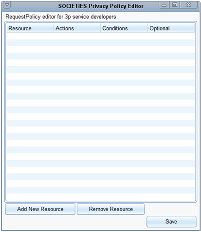
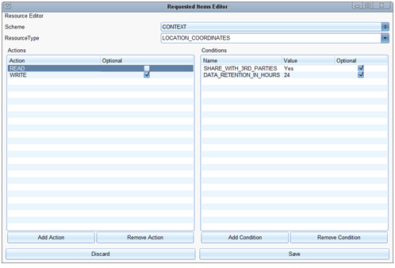
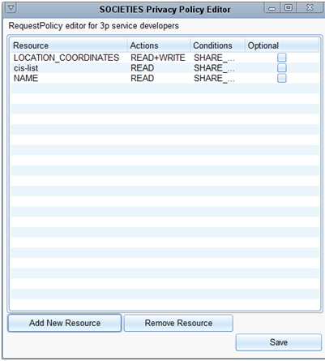
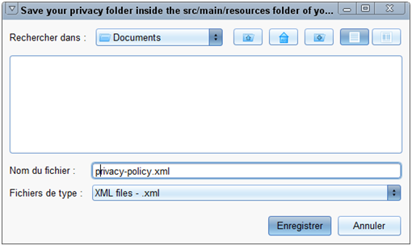

A 3rd party service requires a privacy policy to list the personal data needed in order to complete its actions.
In SOCIETIES, the "Privacy and Trust Protection" component protects the user's privacy. It is mainly based on privacy policies, legal documents which describe every data that are needed to perform an action. Every CIS or third party services in SOCIETIES provide a privacy policy to describe the list of personal data that they intent to use.The purpose of the following paragraphs is to describe better the creation and usage of privacy policies in SOCIETIES.
The privacy policy of a 3P service list the personal data needed by the service to complete its actions. It is the same for a CIS, except that these actions are defined by the SOCIETIES platform. For example if a service is able to show a list of restaurants near a location, it will have in its privacy policy: "the location is needed to use this service". Of course, in real life, a privacy policy is formatted.
Then, just before the installation of the 3rd party service, the "Privacy Protection" will be able to compare this privacy policy to the user's privacy preferences and so: negotiate how the user wants to use this service in terms of privacy. It is the same before the subscription to a CIS. In the last example, if the user has a privacy preference containing: "never share my location with 3rd party service", the negotiation will not find an agreement, and the 3rd party service will not be installed on the CSS. In real life, privacy preferences are more complex than that, and the "Privacy Protection" component is able to prompt the user if he doesn't yet what to do automatically.
In SOCIETIES, a Privacy Policy is a XML document following the XACML 2.0 standard (https://github.com/societies/SOCIETIES-Platform/blob/development/api/schema/external/src/main/resources/org.societies.api.schema.privacytrust.privacy.model.privacypolicy.xsd#L71). This is a common way to represent privacy policies. In order to facilitate privacy policy manipulation in SOCIETIES, there is an equivalence between Java privacy policy, and XACML privacy policy.
• Java format: A privacy policy is described on Github as a RequestPolicy (https://github.com/societies/SOCIETIES-Platform/blob/development/api/schema/external/src/main/resources/org.societies.api.schema.privacytrust.privacy.model.privacypolicy.xsd#L71).
o To generate a RequestPolicy from a XACML privacy policy: PrivacyPolicyUtils::fromXaxcmlString https://github.com/societies/SOCIETIES-Platform/blob/development/api/java/external/src/main/java/org/societies/api/privacytrust/privacy/util/privacypolicy/PrivacyPolicyUtils.java#L178o To generate a XACML privacy policy from a RequestPolicy: PrivacyPolicyUtils::toXacmlString (https://github.com/societies/SOCIETIES-Platform/blob/development/api/java/external/src/main/java/org/societies/api/privacytrust/privacy/util/privacypolicy/PrivacyPolicyUtils.java#L160)
To summarize, there are several classes useful to manipulate privacy policies:
• Data model: RequestPolicy
• Utility class: RequestPolicyUtils (https://github.com/societies/SOCIETIES-Platform/blob/development/api/java/external/src/main/java/org/societies/api/privacytrust/privacy/util/privacypolicy/RequestPolicyUtils.java) - provides methods to instantiate, compare and display RequestPolicy classes
• Utility class: PrivacyPolicyUtils (https://github.com/societies/SOCIETIES-Platform/blob/development/api/java/external/src/main/java/org/societies/api/privacytrust/privacy/util/privacypolicy/PrivacyPolicyUtils.java)- provides higher level methods than RequestPolicyUtils to
o transform a RequestPolicy to an XACML string and vice versa,
o retrieve personal data listed in a privacy policy,
o generate easily a pre-filled privacy policy.
• Societies internal service: IPrivacyPolicyManager (https://github.com/societies/SOCIETIES-Platform/blob/development/api/java/internal/src/main/java/org/societies/api/internal/privacytrust/privacyprotection/IPrivacyPolicyManager.java) - manages privacy policies of a container.
Who is responsible of the creation? Creation of privacy policies is the role of the CIS creator. How to create and associate it to the CIS? When a user wants to create a CIS using his webapp or his Android phone, a privacy policy form will be displayed in the second step of the CIS creation process. This form displays a pre-filled privacy policy depending of the CIS type and its membership criteria. Generally, the user don't have to change anything, but he can customize the privacy policy for specific usage. If the CIS creator is a 3P service, it have to generate the privacy policy, i.e. instantiate a RequestPolicy class and fill it. This is generally done in two steps: • Use PrivacyPolicyUtils inferring methods to generate a pre-filled privacy policy. • Edit this RequestPolicy object (eventually using RequestPolicyUtils) to add data to the list. The generated privacy policy can then be passed as a parameter of the ICisManager::createCis method. The CIS Manager takes care of associating the privacy policy to the new CIS using the IPrivacyPolicyManager::updatePrivacyPolicy method.
Who is responsible of the creation? Creation of privacy policies is definitely the role of the developer of a 3P service. It is like adding "permission" element in the AndroidManifest file of an Android application. For information, if some types of data are missing in a privacy policy (intentionally or not), this will have consequences: • access control is always done when an external access is requested to personal data, so there is still no risk for privacy • but the user may refuse some requests because he was not informed of them before, • and the trust and assessment values of this 3P service will be reduced, so future users of this 3P service will know that it is potentially not safe in terms of privacy, • and the first usage of the service will be slower (because of unexpected access control checking), • to finish, the user may be bored by these unexpected access control checking How to create it? The 3P service developers has to create a XACML document, named "privacy-policy.xml", for its 3P service. An external tool (https://redmine.ict-societies.eu/attachments/458/societies-privacy-policy-editor.jar) is available to generate more easily this privacy policy. It allows 3P service developers to list required personal data for their service, and explain the context and purpose of these access request. When downloaded open the privacy policy editor:
Now, you have to add new resources (i.e. data types), which can be done by clicking on "Add New Resource". For each resources, it is required to select at least one requested actions in Read, Write, Create, Delete. And it is possible to add some conditions, like the data retention time and to specify if this data will be disclose to other or not.
Continue to add as much resources as required.
When this is finished, save the privacy policy as a file: "privacy-policy.xml".
